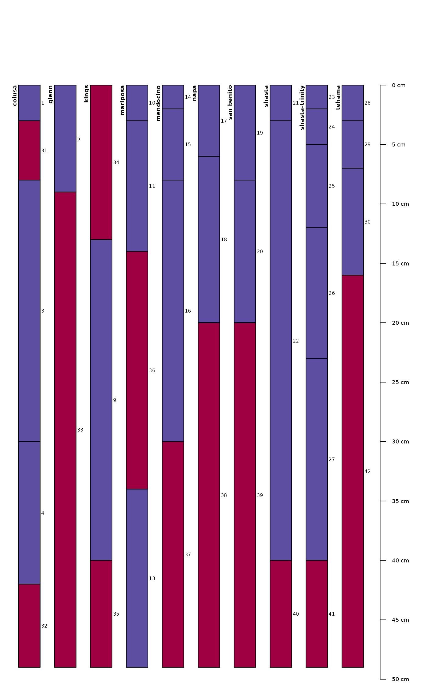
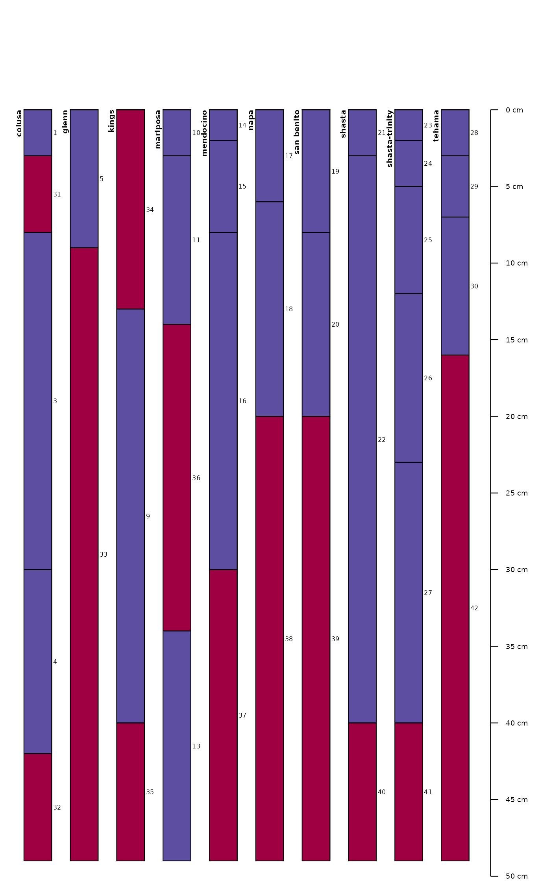
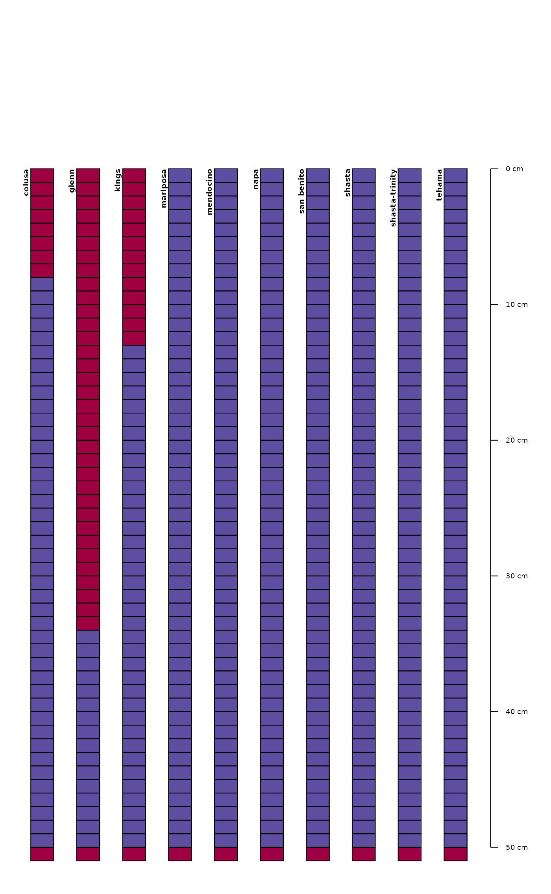
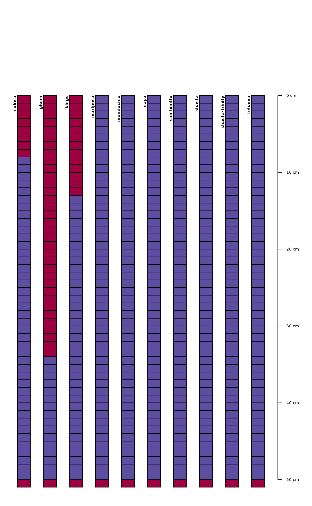

This function attempts to find "gaps" in the horizon records of a SoilProfileCollection object and fill with placeholder horizons (profile ID, horizon ID, to/bottom depths, all else NA). Missing horizon records between the top of each profile and to_top, or the bottom of each profile and to_bottom are treated as gaps when those arguments are not NULL. You can use this function to prepare a potentially messy SoilProfileCollection for subsequent analyses that are sensitive to horizon sequence inconsistencies or require a conformal "rectangle" of data spanning known depths.
Gaps are defined as:
within each profile, for horizons
iton_hz:bottom_i != top_i+1 (but only to i = 1:(n_hz - 1)
Usage
fillHzGaps(x, flag = TRUE, to_top = 0, to_bottom = max(x))Arguments
- x
SoilProfileCollectionobject- flag
logical, flag empty horizons that have been added. default:
TRUE- to_top
numeric, fill from shallowest top depth in each profile to specified depth? default:
0- to_bottom
numeric, fill from deepest bottom depth in each profile to specified depth? default:
aqp::max(x)
Examples
data(sp4)
depths(sp4) <- id ~ top + bottom
# introduce depth logic errors
idx <- c(2, 6:7, 8, 12)
sp4$top[idx] <- NA
# check
horizons(sp4)[idx, ]
#> id name top bottom K Mg Ca CEC_7 ex_Ca_to_Mg sand silt clay CF
#> 2 colusa ABt NA 8 0.2 23.7 5.6 21.4 0.23 42 31 27 0.27
#> 6 glenn Bt NA 34 0.3 18.9 4.5 27.5 0.20 49 18 34 0.84
#> 7 kings A NA 4 0.2 12.1 1.4 23.7 0.58 43 55 3 0.50
#> 8 kings Bt1 NA 13 0.6 12.1 7.0 18.0 0.51 36 49 15 0.75
#> 12 mariposa Bt2 NA 34 0.3 44.3 6.2 34.1 0.14 36 33 31 0.71
#> hzID
#> 2 2
#> 6 6
#> 7 7
#> 8 8
#> 12 12
# create gaps by removing logic errors
x <- HzDepthLogicSubset(sp4, byhz = TRUE)
#> dropping horizons with invalid depth logic, see `metadata(x)$removed.horizons`
# check on removed horizons (hzID values)
metadata(x)$removed.horizons
#> [1] "2" "6" "7" "8" "12"
# inspect
par(mar = c(0, 0, 0, 2))
plotSPC(x, width = 0.3, default.color = 'royalblue',
name = 'hzID', name.style = 'center-center', cex.names = 0.8,
cex.id = 0.66)
# fill gaps left by HzDepthLogicSubset()
z <- fillHzGaps(x, flag = TRUE)
# graphical check
plotSPC(z, width = 0.3, color = '.filledGap', name = 'hzID',
show.legend = FALSE, name.style = 'center-center', cex.names = 0.8,
cex.id = 0.66)
 # fill top to 0 cm
z2 <- fillHzGaps(x, flag = TRUE, to_top = 0)
plotSPC(z2, width = 0.3, color = '.filledGap', name = 'hzID', show.legend = FALSE)

# fill bottom to max(SPC)
z3 <- fillHzGaps(x, flag = TRUE, to_top = 0, to_bottom = max(x))
plotSPC(z3, width = 0.3, color = '.filledGap', name = 'hzID', show.legend = FALSE)
## another example
data(sp4)
depths(sp4) <- id ~ top + bottom
#> This is already a SoilProfileCollection-class object, doing nothing.
# remove 1st horizons from profiles 1:4
idx <- sp4[,, .FIRST, .HZID]
replaceHorizons(sp4) <- horizons(sp4)[-idx[1:4], ]
# prepare for dice()
z <- fillHzGaps(sp4, to_top = 0, to_bottom = 50, flag = TRUE)
# empty-horizon padding is in place for formula interface to dice()
d <- dice(z, fm = 0:50 ~ .)
#> dropping horizons with invalid depth logic, see `metadata(x)$removed.horizons`
#> filling gaps left by HzDepthLogicSubset
plotSPC(d, color = 'Ca', show.legend = FALSE)
# fill top to 0 cm
z2 <- fillHzGaps(x, flag = TRUE, to_top = 0)
plotSPC(z2, width = 0.3, color = '.filledGap', name = 'hzID', show.legend = FALSE)

# fill bottom to max(SPC)
z3 <- fillHzGaps(x, flag = TRUE, to_top = 0, to_bottom = max(x))
plotSPC(z3, width = 0.3, color = '.filledGap', name = 'hzID', show.legend = FALSE)
## another example
data(sp4)
depths(sp4) <- id ~ top + bottom
#> This is already a SoilProfileCollection-class object, doing nothing.
# remove 1st horizons from profiles 1:4
idx <- sp4[,, .FIRST, .HZID]
replaceHorizons(sp4) <- horizons(sp4)[-idx[1:4], ]
# prepare for dice()
z <- fillHzGaps(sp4, to_top = 0, to_bottom = 50, flag = TRUE)
# empty-horizon padding is in place for formula interface to dice()
d <- dice(z, fm = 0:50 ~ .)
#> dropping horizons with invalid depth logic, see `metadata(x)$removed.horizons`
#> filling gaps left by HzDepthLogicSubset
plotSPC(d, color = 'Ca', show.legend = FALSE)
 plotSPC(d, color = '.filledGap', show.legend = FALSE)

plotSPC(d, color = '.filledGap', show.legend = FALSE)
